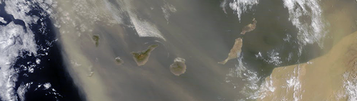
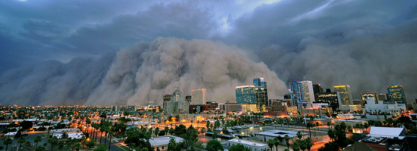
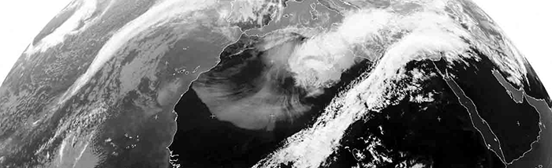

Between 2010 and 2014 I was a postdoc at the Instituto de Astrofísica de Canarias on the island of Tenerife of the Canary Archipelago. From time to time, we would experience extreme climate events known locally as Calima. These are periods where mineral dust from the Sahara, exported in discrete and often-dramatic outbreak events, are suspended in the air. The Calima conditions last from hours to days. During this time dramatic changes occur in the local climate.

Terra MODIS false colour image of a strong Calima event over the Canary Islands
Although like most aerosols, mineral dust increases the Earth’s reflectance of short-wave radiation, the dust also absorbs radiation – i.e. the dust both reflects and absorbs short-wave radiation, the specific proportions with which it does so are determined by a variety of factors such as the angle of incidence, and surface properties of the mineral dust grains. As a result of the dusts radiative impact, air containing the suspended dust is hotter than it would otherwise be. Consequently, when Calima is present, air temperature increases with height in the troposphere, creating an inversion: normally at the latitudes of the Canary Islands, air temperature decreases through the troposphere until the tropopause (around 10 km above sea level). Indeed, in the same way the temperature boundary between the troposphere and stratosphere traps the Earth’s weather systems within the troposphere, the miniature and localised temperature inversions associated with the Calima trap the hot, windless air over the Canary Islands – normally a rather unpleasant experience for their ~2,120,000 inhabitants.
Calima is interesting, as, far from being a phenomenon of merely localised impacts, the transport of Saharan mineral dust westwards over the North Atlantic (and indeed in many other directions) actually has impacts across the globe. Perhaps of most note is the dusts role in maintaining primary-productivity over the Amazon basin – dust from the Sahara is a crucial fertiliser to the Amazon rainforest. The dust not only fertilisers terrestrial photosynthesises, but also primary productivity of oceans: algal blooms resulting from mineral dust fertilisation are visible from space, and constitute a significant element of the global ecosystem. There are also more diverse and curious impacts of the dust, ranging from the creation of the ominously titled blood-rain; to influences on soil development around the world; or providing the rare type of particles able to act as Ice Forming Nuclei in clouds found to be influential as far away as Alaska; the dust has even been indirectly linked to the death of coral in the Caribbean by providing a vector for spores producing Sea Fan disease.

A dramatic Haboob over Arizona, USA - much dust is entrained over the Sahara by similar Haboobs over Africa. These occur seasonally in association with the movement of the Inter Tropical Discontinuity over the Saharan region. The resulting formation of mesoscale convective systems and associated cold tongues generates Haboobs. Image credit Daniel Bryant
Although the Sahara and Sahel of North Africa is the largest source of mineral dust, which, itself is the largest constituent of the global aerosol burden by mass, there was relatively little known about it until recently. This is changing following the efforts of scientists in numerous monitoring campaigns such as SAMUM (the SAharan Mineral dUst experiMent) and the Fennec project. Following successes of such campaigns and other studies, scientists have pinpointed key regions important to the entrainment of dust over the Sahara, and the mechanisms by which the dust is entrained and exported and eventually deposited.

The immense scale of the dust outbreaks can be appreciated from 36,000 km above the Earth, courtesy of the thermal infra-red (IR) channel from Meteosat 3~rd~ generation satellite platform (taken on 03/03/2004). A strong dust outbreak event is visible over North Africa as white (relatively low IR emission) region against the darker (high IR emission) land surface. Image from NEODAAS Dundee Satellite Receiving Station, credit EUMETSAT/NERC/Dundee University.
Monitoring dust export events from the Sahara can be performed by through ground-based measurements, satellite observations, or palaeoclimatic reconstructions. All of these methods have different benefits and limitations. Recently, in a paper published in the Quarterly Journal of the Royal Meteorological Society, I have used nightly optical extinction data taken from the Carlsberg Meridian Telescope located on La Palma recorded over an approximately 30 year period to reconstruct the summertime Calima frequency experienced at the Canary Islands. These data show that in summer months between 1983 and 1997 Calima went from occurring around 50% of the time to only around 10% of the time; then for the remaining period of data (2000 – 2012), the summertime Calima showed no long term trend, essentially remaining consistent around 15% of the time, with year-to-year variations of around 20%. An update to this work should be forthcoming with improved data.
Frequency of Calima events (%) during the high dust season months (July–September),from 1984 to 2012. These data were derived from optical extinction measurements made in situ at the Island of La Palma. Adapted from Figure 6 of Laken et al. 2013.
Analysis of the variations in summer time Calima occurrence in relation to a variety of climate indexes showed that the majority (~50%) of the observed variations in summertime Calima experienced annually are linked to changes in the North Atlantic Oscillation (NAO) occurring around 10-months earlier; this was likely due to a connection between the NAO and rainfall anomalies over North Africa, as moisture reduces the amount of dust for several reasons. Previous studies of Saharan dust outbreaks over the Canary Islands using different datasets and focusing on other times of the year have also shown statistical associations to the NAO. This result is not so surprising, as it is logical that the weather over the Atlantic should have a significant impact on the properties (e.g. if, how, when, and where) dust may be exported from the African continent over the North Atlantic region. However, the exact mechanisms which link variations in the NAO 10-months earlier to summertime Calima experienced at specific regions (such as the Canary Islands) are currently unclear, and are certainly a subject for further study.
Go Top
comments powered by Disqus